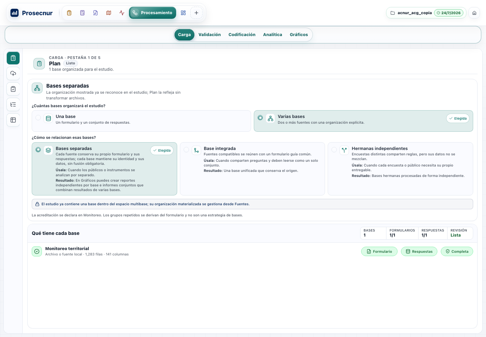
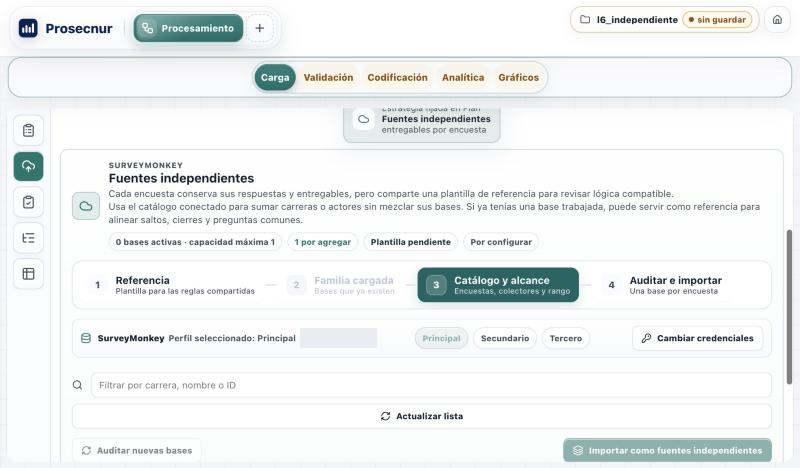
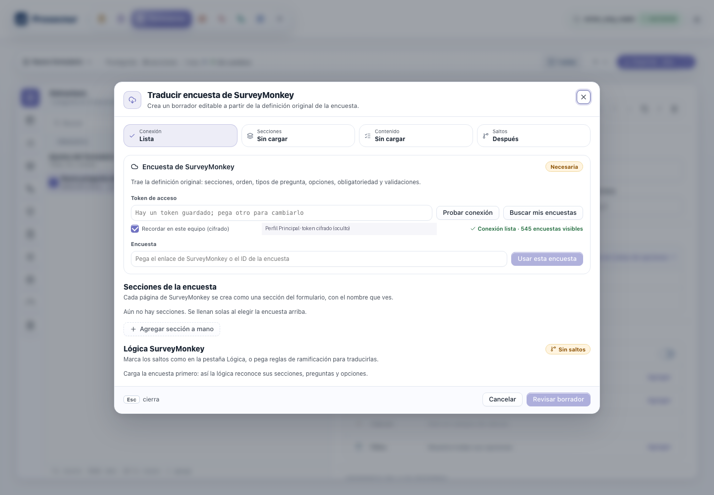
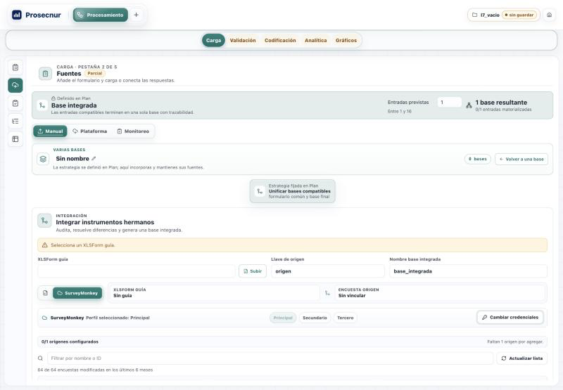
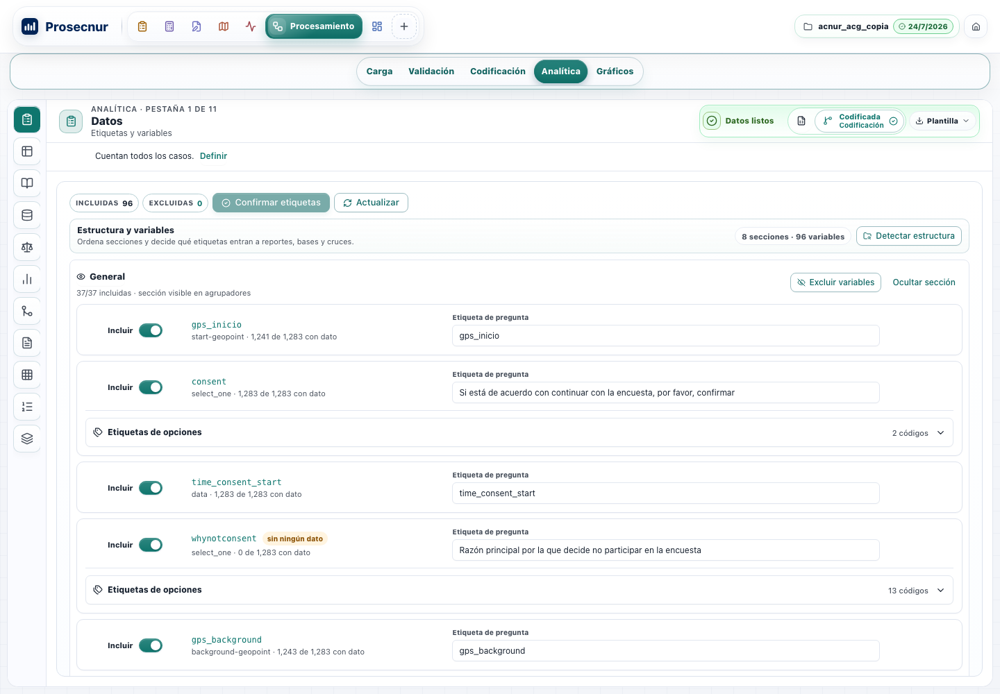
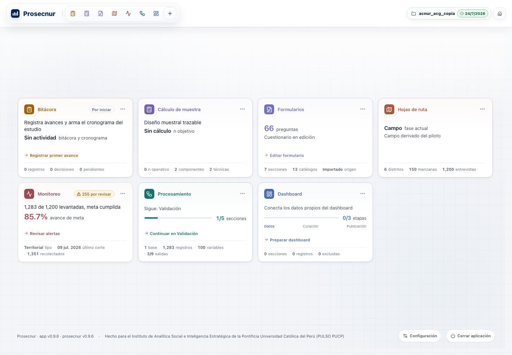
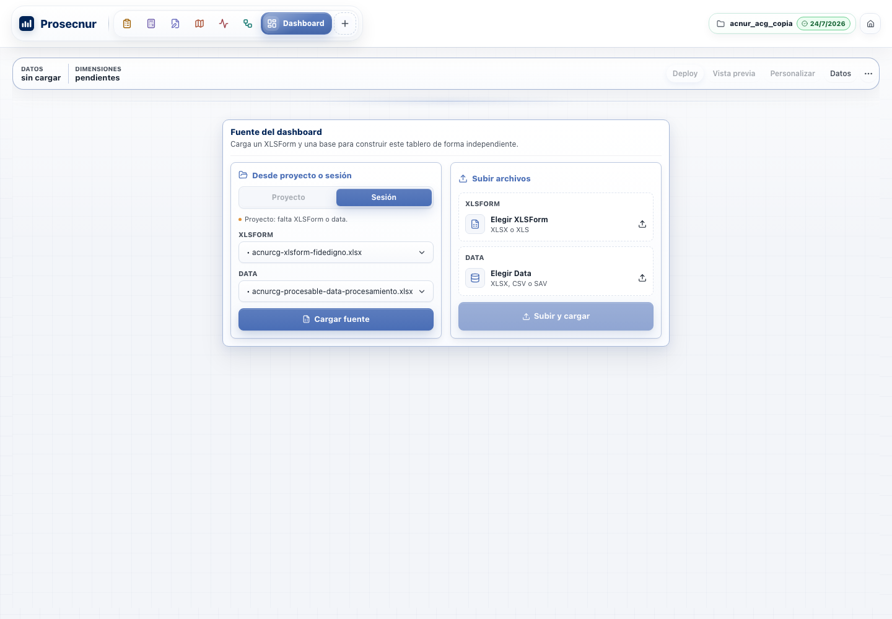
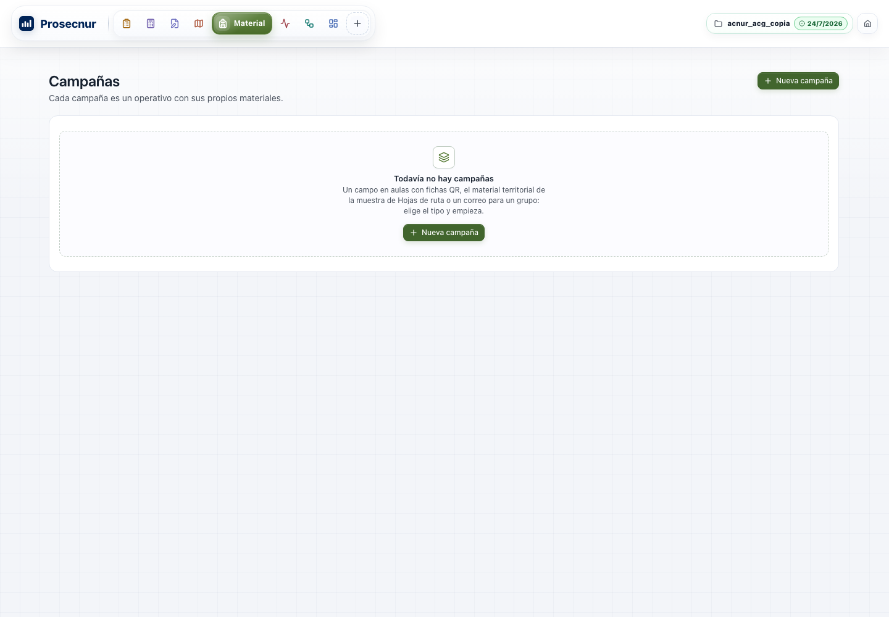
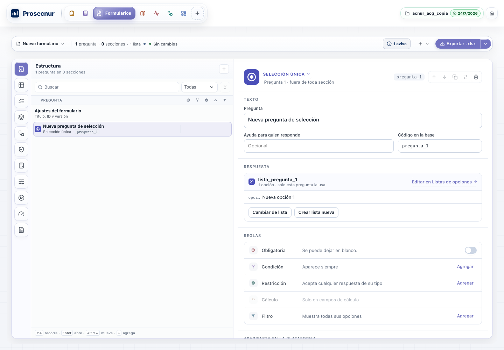
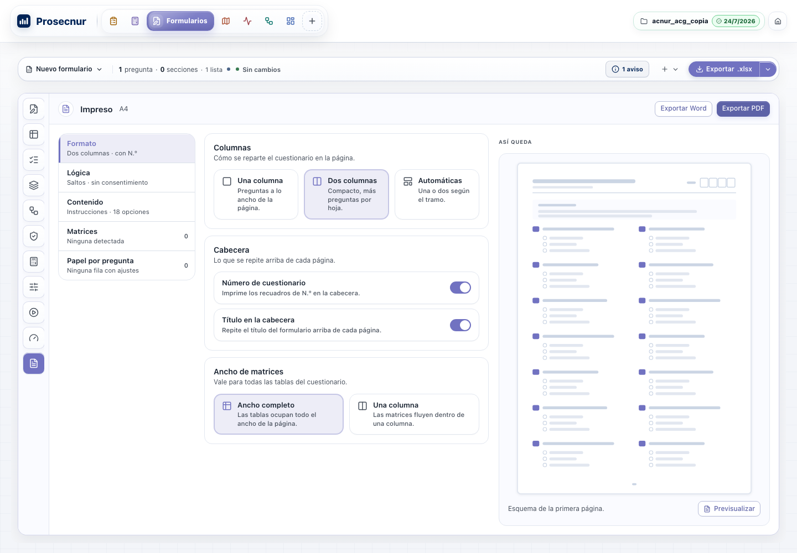

<title>Maqueta de remasterización de la UI — Prosecnur</title>
<link rel="stylesheet" href="css/tokens.css">
<style>
  /* Una sola columna de fichas: cada L abierto con su captura de hoy y lo que falta. Tema único de la app (el oscuro está descartado). */
  :root { color-scheme: light; --warn-bg: #FEF6E7; --warn-fg: #8A5A00; --warn-bd: #F3D9A4; }
  body { margin: 0; background: var(--pulso-bg); color: var(--pulso-text); font: 15px/1.55 -apple-system, BlinkMacSystemFont, "Segoe UI", system-ui, sans-serif; }
  .pag { max-width: 1120px; margin: 0 auto; padding-block: 32px 64px; padding-left: max(16px, env(safe-area-inset-left, 0px)); padding-right: max(16px, env(safe-area-inset-right, 0px)); display: grid; gap: 28px; }
  .cab { display: flex; align-items: center; gap: 12px; }
  .cab b { font-size: 18px; font-weight: 800; color: var(--pulso-primary); }
  .chip { display: inline-flex; align-items: center; gap: 6px; padding: 2px 10px; border-radius: 999px; border: 1px solid var(--pulso-border); background: var(--pulso-surface); font-size: 12px; color: var(--pulso-text-soft); white-space: nowrap; }
  .chip.decide { background: var(--warn-bg); border-color: var(--warn-bd); color: var(--warn-fg); }
  .chip.listo { background: var(--pulso-success-bg); border-color: var(--pulso-success-border); color: var(--pulso-success-fg); }
  h1 { margin: 0; font-size: 28px; line-height: 1.2; text-wrap: balance; }
  .lead { margin: 6px 0 0; max-width: 68ch; color: var(--pulso-text-soft); }
  .resumen { display: grid; grid-template-columns: repeat(auto-fit, minmax(180px, 1fr)); gap: 12px; }
  .resumen div { background: var(--pulso-surface); border: 1px solid var(--pulso-border); border-radius: 12px; padding: 12px 14px; }
  .resumen strong { display: block; font-size: 24px; font-variant-numeric: tabular-nums; }
  .resumen span { font-size: 13px; color: var(--pulso-text-soft); }
  h2 { margin: 12px 0 0; font-size: 13px; letter-spacing: .08em; text-transform: uppercase; color: var(--pulso-text-muted); }
  .ficha { background: var(--pulso-surface); border: 1px solid var(--pulso-border); border-radius: var(--pulso-radius-card, 14px); padding: 20px; display: grid; grid-template-columns: minmax(0, 1fr) minmax(0, 1.15fr); gap: 20px; }
  .ficha header { grid-column: 1 / -1; display: flex; flex-wrap: wrap; align-items: baseline; gap: 10px; }
  .ficha header code { font: 700 13px ui-monospace, SFMono-Regular, Menlo, monospace; color: var(--pulso-primary); }
  .ficha h3 { margin: 0; font-size: 18px; }
  .ficha figure { margin: 0; min-width: 0; }
  .ficha img { width: 100%; border-radius: 8px; border: 1px solid var(--pulso-border); display: block; }
  .ficha figcaption { font-size: 12px; color: var(--pulso-text-muted); margin-top: 6px; }
  .txt { min-width: 0; display: grid; align-content: start; gap: 12px; }
  .txt h4 { margin: 0; font-size: 12px; letter-spacing: .06em; text-transform: uppercase; color: var(--pulso-text-muted); }
  .txt p, .txt ul { margin: 0; }
  .txt ul { padding-left: 18px; display: grid; gap: 6px; }
  .visto { background: var(--pulso-surface-2); border-radius: 8px; padding: 10px 12px; font-size: 14px; }
  .nota { font-size: 13px; color: var(--pulso-text-soft); }
  .sin-img { display: grid; place-items: center; min-height: 180px; border: 1px dashed var(--pulso-border-strong); border-radius: 8px; color: var(--pulso-text-muted); font-size: 13px; text-align: center; padding: 16px; }
  a { color: var(--pulso-primary); }
  a:focus-visible { outline: 2px solid var(--pulso-primary-focus, var(--pulso-primary)); outline-offset: 2px; }
  table { width: 100%; border-collapse: collapse; font-size: 14px; }
  .tabla { overflow-x: auto; background: var(--pulso-surface); border: 1px solid var(--pulso-border); border-radius: 12px; }
  th, td { text-align: left; padding: 8px 12px; border-bottom: 1px solid var(--pulso-border); vertical-align: top; }
  th { font-size: 12px; color: var(--pulso-text-muted); font-weight: 600; }
  @media (max-width: 820px) { .ficha { grid-template-columns: 1fr; } }
</style>

<main class="pag">
  <div>
    <div class="cab">
      <svg width="30" height="30" viewBox="0 0 64 64" aria-hidden="true"><rect width="64" height="64" rx="15.4" fill="#002457"/><rect x="12" y="30" width="7" height="18" rx="3.5" fill="#fff"/><rect x="23" y="22" width="7" height="26" rx="3.5" fill="#fff"/><rect x="34" y="28" width="7" height="20" rx="3.5" fill="#fff"/><rect x="45" y="16" width="7" height="32" rx="3.5" fill="#fff"/></svg>
      <b>Prosecnur</b>
      <span class="chip">Meta B · lo que falta · 31 oct 2026</span>
    </div>
    <h1>Las unidades abiertas de la Meta B, cómo se ven hoy y cómo mejorarlas</h1>
    <p class="lead">Esta página ya no muestra las 37 unidades del plan: solo las que siguen abiertas fuera de Monitoreo. Cada ficha trae una captura tomada hoy en la app con el proyecto de referencia <code>acnur_acg</code> a 1440×1000, lo que se ve en ella y lo que falta para cerrarla. La maqueta original completa sigue en <a href="historico.html">la versión del 10 de octubre</a>.</p>
  </div>

  <div class="resumen">
    <div><strong>22</strong><span>unidades cerradas de 37</span></div>
    <div><strong>7</strong><span>abiertas que se pueden avanzar sin preguntarte</span></div>
    <div><strong>1</strong><span>abierta que espera una decisión tuya (DOC.0 para el resto de L36)</span></div>
    <div><strong>6</strong><span>abiertas que dependen de Monitoreo</span></div>
  </div>

  <h2>Se pueden avanzar sin decisión tuya</h2>

  <article class="ficha" id="L5">
    <header><code>L5b · L6 · L9</code><h3>Carga: un solo importador de plataforma</h3><span class="chip">en curso</span></header>
    <figure><figcaption>Carga › Plan, hoy.</figcaption></figure>
    <div class="txt">
      <div class="visto"><b>Lo que se ve:</b> el estudio tiene una sola base, pero Plan marca «Varias bases» y «Bases separadas». La importación por plataforma no está a la vista desde aquí: se entra por Fuentes.</div>
      <h4>Qué falta</h4>
      <ul>
        <li><b>L5b, cerrada el 1 de noviembre</b> (<code>e978499e2</code>; visto en vivo): con encuestas reales de SurveyMonkey, el importador único muestra sus cuatro fases. El trabajo sigue al ir a Plan y volver, y «Cancelar» deja el estudio sin cambios. Al verlo apareció un defecto: el catálogo decía «69 resp.» y la base guardaba 59 sin explicar la diferencia. Ahora dice «59 de 69 respuestas · fuera: 8 parciales, 2 sin consentimiento» (<code>f1b26637d</code>).</li>
        <li><b>L5c, nueva:</b> cuando SurveyMonkey no responde a tiempo, el aviso muestra el error interno de R tal cual. Debería decir «SurveyMonkey no respondió a tiempo» y ofrecer reintentar.</li>
        <li><b>L9:</b> la base integrada y el paquete .sav ya se importan en segundo plano y dicen en qué van. Falta verlo en vivo, y eso exige reinstalar el paquete de R.</li>
        <li><b>L6, cerrada el 1 de noviembre:</b> se vio en vivo con un proyecto nuevo de hermanas independientes. El asistente ya vive fuera de BasesPanel y tiene sus cuatro pasos. A 1024 aparecieron dos defectos y quedaron corregidos: el paso 4 se cortaba en el borde, y cada paso decía su número dos veces («1 1 Referencia»). Ahora el stepper se compacta según su propio ancho.
          <figure style="margin-top:8px"><figcaption>A 1024 px, con el arreglo. El fragmento del token está tapado en la imagen.</figcaption></figure></li>
      </ul>
      <h4>Cómo mejorarlo</h4>
      <ul>
        <li>Plan debería decir lo que hay: con una sola base, mostrar «Una base» y ofrecer pasar a varias cuando se agregue la segunda.</li>
        <li>Un botón «Agregar base» visible en Plan que abra el importador único con SurveyMonkey, Kobo y archivo como opciones de una misma lista.</li>
      </ul>
    </div>
  </article>

  <article class="ficha" id="L7">
    <header><code>L7 · L8</code><h3>Credenciales y diálogo de SurveyMonkey</h3><span class="chip listo">hechas</span></header>
    <figure><figcaption>Formularios › Traducir encuesta de SurveyMonkey, hoy. El fragmento del token está tapado en la imagen.</figcaption></figure>
    <div class="txt">
      <div class="visto"><b>Lo que se ve:</b> el diálogo ya usa el kit: pasos arriba, Escape cierra y el foco vuelve al botón que lo abrió. Con un token guardado comprueba la conexión al abrir y muestra «545 encuestas visibles».</div>
      <h4>Qué falta</h4>
      <ul>
        <li><b>L7, cerrada el 1 de noviembre</b> (<code>0ec53dc32</code> y el foco de vuelta): cada proyecto recuerda el perfil de SurveyMonkey con que se trabajó. La ida y la vuelta se vieron en vivo con una base integrada nueva: «Configurar credenciales» abre Configuración › Conexiones sobre el mismo paso, y al cerrarla se vuelve a ese paso con el perfil elegido. Al verlo apareció un defecto: el foco caía al inicio de la página. Ahora vuelve al botón que abrió el panel.
          <figure style="margin-top:8px"><figcaption>La vuelta: mismo paso, perfil elegido y el foco en el botón que abrió el panel.</figcaption></figure></li>
        <li><b>L8, cerrada el 1 de noviembre con una desviación declarada:</b> con un token guardado, el diálogo verifica la conexión al abrir, como pidió el revamp de Formularios (U4). Sin token no conecta. El plan original pedía no conectar hasta que el usuario lo indicara; volver a eso es un cambio de una línea.</li>
      </ul>
      <h4>Cómo mejorarlo</h4>
      <ul>
        <li>El pegado del enlace y el botón «Buscar mis encuestas» compiten. Conviene un solo campo que busque por nombre o acepte el enlace.</li>
        <li>Los pasos «Secciones», «Contenido» y «Saltos» aparecen en «Sin cargar» antes de elegir la encuesta; podrían mostrarse atenuados hasta entonces.</li>
      </ul>
    </div>
  </article>

  <article class="ficha" id="L28">
    <header><code>L28 · L29</code><h3>Tablas densas y tipografía por roles</h3><span class="chip">L28 hecho; L29 en curso</span></header>
    <figure><figcaption>Analítica › Datos, hoy.</figcaption></figure>
    <div class="txt">
      <div class="visto"><b>Lo que se ve:</b> cada variable ocupa una tarjeta de unos 80 px y caben cinco por pantalla, aunque el estudio tiene 96. El chip de la cabecera repite «Codificada Codificación».</div>
      <h4>Qué falta</h4>
      <ul>
        <li><b>L29, en curso y ya con cifra de cierre:</b> el piso de 10 px se cumple fuera de Monitoreo. Desde el 1 de noviembre, el Home escribe su letra por rol (de 76 tamaños en píxeles quedan 2, títulos de 20 px que son una excepción declarada). Un contrato cuenta lo que falta en los módulos sin dueño (1.949 en 105 hojas) y no deja que suba. Siguen Analítica (196) y Dashboard (208).</li>
        <li><b>L28, hecho el 1 de noviembre</b> (<code>868bf7bdc</code>): Datos es el primer consumidor de <code>PulsoTable</code>. Una fila de 36 px por variable (incluir, código, tipo, con dato, etiqueta, opciones) pasa de cinco tarjetas a unas catorce filas a 1440; las etiquetas de opciones, la cobertura y los avisos se abren en un inspector que lee <code>?foco=</code>. El chip dice «Codificada» sola.</li>
      </ul>
      <h4>Cómo mejorarlo</h4>
      <ul>
        <li>Datos es el mejor primer consumidor de <code>PulsoTable</code>: una fila de 36 px por variable (incluir, código, tipo, con dato, etiqueta) lleva de 5 a unas 20 variables por pantalla, y las etiquetas de opciones se abren en el inspector.</li>
        <li>Quitar la repetición del chip: «Codificada» basta.</li>
      </ul>
    </div>
  </article>

  <article class="ficha" id="L31">
    <header><code>L31</code><h3>Home vivo</h3><span class="chip listo">hecha</span></header>
    <figure><figcaption>Home del proyecto, hoy.</figcaption></figure>
    <div class="txt">
      <div class="visto"><b>Lo que se ve:</b> las tarjetas se recargan solas y muestran su siguiente acción. Hay tres problemas a la vista:
        <ul>
          <li>Monitoreo dice «1,283 de 1,200 levantadas, meta cumplida» y, debajo, «85.7% avance de meta». Las dos cifras se contradicen.</li>
          <li>Formularios dice «66 preguntas», pero el editor abre «Nuevo formulario · 1 pregunta».</li>
          <li>Hojas de ruta repite «Campo fase actual / Campo derivado del piloto».</li>
        </ul>
      </div>
      <h4>Qué falta</h4>
      <ul>
        <li><b>Hecho el 1 de noviembre</b> (<code>1edc02e45</code>): el bloque «desde tu última apertura» ocupa el hueco sobre las tarjetas y dice qué cambió (+245 validadas, −5 por revisar…). La fecha vive en el equipo (<code>localStorage</code>), no en el <code>.pulso</code>. Procesamiento ya no decía «Por iniciar · 0/5» con Analítica lista: cuenta las fases que declara el motor.</li>
      </ul>
      <h4>Cómo mejorarlo</h4>
      <ul>
        <li><b>Hecho el 31 de octubre</b> (<code>654ef8be5</code>): Monitoreo dice «1,028 de 1,200 validadas, faltan 172» junto a 85.7 %, Formularios aclara que la cifra es del instrumento y que el editor tiene otro borrador, y Hojas de ruta ya no repite «Campo». La captura de esta ficha es anterior al arreglo.</li>
        <li>El espacio vacío sobre las tarjetas (unos 200 px a 1440) es el lugar natural del bloque «hoy».</li>
      </ul>
    </div>
  </article>

  <article class="ficha" id="L37">
    <header><code>L37</code><h3>Sistema de movimiento</h3><span class="chip">casi cerrada</span></header>
    <div class="sin-img">El movimiento no se ve en una captura fija. El laboratorio con las 22 coreografías sigue en <a href="m/L37-movimiento.html">la maqueta de L37</a>.</div>
    <div class="txt">
      <h4>Qué falta</h4>
      <ul>
        <li><b>Hecho el 31 de octubre</b> (<code>29135abca</code>): la perilla del switch y la barra de progreso se mueven con <code>transform</code>, y la pantalla se ve idéntica. Las siete transiciones restantes tienen motivo y quedan anotadas: el indicador de pestañas cambia de tamaño, los selectores segmentados se expanden como un solo gesto y el nodo del mapa de lógica es SVG.</li>
        <li>Las animaciones infinitas que quedan informan carga o la dirección del flujo y se quedan a propósito. Las excepciones con su motivo ya están en el contrato.</li>
      </ul>
    </div>
  </article>

  <h2>Esperan una decisión tuya</h2>

  <article class="ficha" id="L16">
    <header><code>L16 · D2</code><h3>Dashboard con el chrome de los demás módulos</h3><span class="chip listo">hecha</span></header>
    <figure><figcaption>Dashboard, hoy.</figcaption></figure>
    <div class="txt">
      <div class="visto"><b>Lo que se ve:</b> el Dashboard tiene su propia barra de pestañas a la derecha (Deploy, Vista previa, Personalizar, Datos) y no usa el rail de los otros módulos. Además dice «Proyecto: falta XLSForm o data» mientras los dos selectores muestran un archivo elegido.</div>
      <h4>Qué se hizo</h4>
      <ul><li><b>Hecho el 1 de noviembre</b> (<code>ac9cd52a4</code>): la administración usa el rail de 56 px con Resumen, Relaciones, Base de datos y Dimensiones; vista previa y el tablero publicado conservan su fila de píldoras. Las acciones llevan ícono y «Deploy» pasa a «Publicar». El aviso de la fuente nombra la pieza que falta y sólo aparece cuando se usa la sesión porque el proyecto quedó fuera.</li></ul>
    </div>
  </article>

  <article class="ficha" id="L16b">
    <header><code>L16</code><h3>Material de campo sin campañas</h3><span class="chip listo">se resuelve con el ADR 0118</span></header>
    <figure><figcaption>Material de campo, hoy.</figcaption></figure>
    <div class="txt">
      <div class="visto"><b>Lo que se ve:</b> el vacío ya explica qué es una campaña y ofrece crearla. Dentro de una campaña, el rail ya existe.</div>
      <h4>Qué falta</h4>
      <p>L16 pedía el rail de 56 px aquí. Con la mudanza de Salidas a Material (ADR 0118), la parte de Hojas de ruta › Entrega dejó de existir. La fila del GOAL tiene que reescribirse con lo que queda.</p>
    </div>
  </article>

  <article class="ficha" id="L17">
    <header><code>L17 · D1</code><h3>Formularios con la barra de comandos común</h3><span class="chip listo">hecha</span></header>
    <figure><figcaption>Formularios › Constructor, hoy.</figcaption></figure>
    <div class="txt">
      <div class="visto"><b>Lo que se ve:</b> la banda ya está más contenida que en octubre (selector, conteos, un aviso, agregar y exportar). El rail tiene doce íconos sin texto.</div>
      <h4>Qué se hizo</h4>
      <ul>
        <li><b>Hecho el 1 de noviembre</b> (<code>6f3a76547</code>): la banda es la barra de mando común (selector, conteos y estado a la izquierda; el nombre de la pestaña activa al centro; aviso, agregar y exportar a la derecha). Se retira la excepción de chrome de Formularios. El rail lleva tooltip con nombre y descripción.</li>
        <li>Pedidos de Gonzalo en la misma tanda: el asa de arrastre se ve entera e igual al arrastrar, y la fila suelta las flechas (<code>45b5cc1a4</code>); un botón «?» junto al aviso explica cada ícono de tipo, lógica y restricción (<code>9f3bdccf3</code>).</li>
      </ul>
    </div>
  </article>

  <article class="ficha" id="L36">
    <header><code>L36</code><h3>Formularios › Documento</h3><span class="chip">mejora hecha; el resto espera DOC.0</span></header>
    <figure><figcaption>Formularios › Impreso, hoy.</figcaption></figure>
    <div class="txt">
      <div class="visto"><b>Lo que se ve:</b> la pestaña Impreso ya reemplazó al antiguo «Configurar PDF». Tiene partes a la izquierda, opciones al centro, una vista previa y exportación a Word y PDF.</div>
      <h4>Qué falta</h4>
      <p>L36 pide más: portada, lógica impresa, estilos con candado, páginas con bloques que se pueden seleccionar, inspector y versiones, igual que el editor de láminas. Eso empieza con una sesión de diseño contigo (DOC.0).</p>
      <h4>Cómo mejorarlo ya</h4>
      <ul><li><b>Hecho el 1 de noviembre</b> (<code>14589c198</code>): «Así queda» dibuja la primera página real (título, preguntas numeradas y sus opciones) en baja resolución y al instante, con las columnas y la cabecera elegidas. Portada, estilos con candado y lo demás siguen esperando DOC.0.</li></ul>
    </div>
  </article>

  <h2>Dependen de Monitoreo</h2>
  <div class="tabla">
    <table>
      <thead><tr><th>Unidad</th><th>Qué falta</th></tr></thead>
      <tbody>
        <tr><td>L10</td><td>Readiness por pestaña: ya está en los cuatro perfiles de Monitoreo y en Analítica. Falta una verificación final para darla por cerrada.</td></tr>
        <tr><td>L18</td><td>Bandas fijas de contexto en Monitoreo territorial (la parte de Cálculo está cerrada).</td></tr>
        <tr><td>L19</td><td>Sub-barras sin dirección en Monitoreo; Bitácora, Carga y Hojas de ruta están resueltos.</td></tr>
        <tr><td>L20</td><td>Una sola lectura de avance con su base. La contradicción del Home («meta cumplida» y 85.7 %) cae aquí.</td></tr>
        <tr><td>L33</td><td>Desduplicar Telefónico y Acreditación: falta la segunda parte, 242 declaraciones repetidas.</td></tr>
        <tr><td>L38</td><td>Un verbo por dirección en Monitoreo: falta cerrarlo en todos los perfiles.</td></tr>
      </tbody>
    </table>
  </div>
  <p class="nota">Las capturas se tomaron el 31 de octubre de 2026 con una copia de <code>acnur_acg</code>; ninguna marcó problemas de geometría. El detalle de cada unidad vive en <code>docs/qa/goal-modernizacion-ui-2026-10-10.md</code>.</p>
</main>
